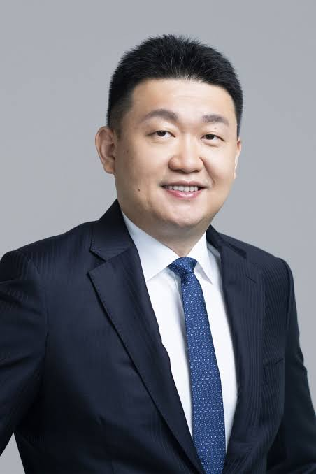
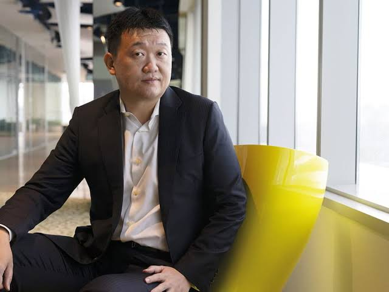

- FREE FIRE
- SOBRE
A Garena é uma desenvolvedora de jogos online e uma distribuidora digital sediada em Cingapura. Fundada em 2009, é conhecida por jogos como Free Fire, um dos mais populares do mundo em dispositivos móveis.
A empresa também atua como plataforma de eSports, organizando competições internacionais.

A Garena é uma empresa de tecnologia fundada em Cingapura em 2009, conhecida por sua forte presença no mercado de jogos online. Seu nome é derivado do termo "garena", que significa "arena" em malaio. A empresa começou inicialmente como uma plataforma de distribuição de jogos para o sudeste asiático, oferecendo um ambiente para jogadores descobrirem e acessarem uma variedade de títulos populares.
Com o passar dos anos, a Garena expandiu significativamente suas operações, não apenas distribuindo jogos, mas também desenvolvendo e publicando seus próprios títulos. Um de seus maiores sucessos foi o jogo "Free Fire", um battle royale que se tornou um fenômeno global, especialmente em mercados emergentes como Brasil, Índia e Indonésia. "Free Fire" rapidamente se tornou um dos jogos mais baixados do mundo, destacando-se pela sua jogabilidade acessível e constante atualização de conteúdo.
Atualmente, a Garena continua a crescer, diversificando seu portfólio com novos jogos e expandindo suas parcerias globais. Além de "Free Fire", a empresa está envolvida em iniciativas de eSports e desenvolvimento de comunidades de jogadores, solidificando sua posição como uma das principais forças no mercado de jogos online.
 